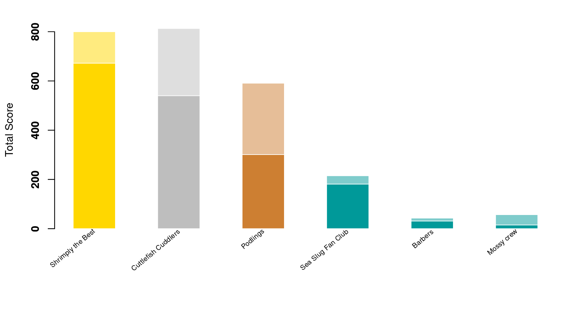

Content
You can view all the wildlife we recorded at this event on iNaturalist here.


| Records | 360 |
| Species | 81 |
| Verified species | 67 |
| Observers | 18 |
| Verified score | 2656 |
| Unverified score | 4064 |
| Top species | Ampeliscidae |
| Top species score | 81 |
Congratulations to Shrimply the Best for taking the gold medal in this BioBlitz Battle! And well done to everyone for a great game and some fantastic wildlife finds.

| Species | Potential Score | Confirmed Score | |
|---|---|---|---|
| Ian | 53 | 813 | 540 |
| eveahh | 42 | 643 | 506 |
| Sarah Bowie | 31 | 510 | 398 |
| Kitty Turner | 9 | 215 | 181 |
| jerrypt | 24 | 377 | 130 |
| karyn03 | 21 | 197 | 125 |
| One World | 15 | 221 | 115 |
| Ben | 9 | 173 | 104 |
| Zoe Caals | 7 | 186 | 93 |
| rc770526 | 6 | 70 | 45 |
| christianbarber | 5 | 43 | 31 |
| Noah W-C | 4 | 99 | 20 |
| mbray61 | 3 | 19 | 17 |
| deviner | 3 | 27 | 16 |
| jenmoss86 | 6 | 57 | 15 |
| Nic | 1 | 10 | 10 |
| Charli | 1 | 8 | 0 |
| seagrassmeadow | 0 | 0 | 0 |
A total of 4 species with a rarity score of 42 or higher have verified records:


Community verified records only
Click any image to view the original photo and licence details on iNaturalist.
| Name | Rarity Score | |
|---|---|---|

|
Dendrodoa grossularia - Baked Bean Ascidian | 27 |

|
Styela clava - Stalked Sea Squirt | 31 |

|
Scyliorhinus canicula - Small-spotted Catshark | 8 |

|
Tritia reticulata - Netted Dogwhelk | 13 |

|
Buccinum undatum - Common Whelk | 8 |

|
Ocenebra erinaceus - European Sting Winkle | 15 |

|
Nucella lapillus - Atlantic Dogwhelk | 8 |

|
Littorina littorea - Common Periwinkle | 8 |
| Crepidula fornicata - Common Atlantic Slippersnail | 11 | |

|
Euspira catena - Large Necklace Shell | 18 |

|
Patella - Patella Limpets | 7 |

|
Calliostoma zizyphinum - European Painted Top Shell | 12 |

|
Steromphala umbilicalis - Purple Topshell | 9 |

|
Steromphala cineraria - Grey Topshell | 11 |

|
Lepidochitona cinerea - Grey Mail-shell | 10 |

|
Acanthochitona crinita - Bristly Mail-shell | 25 |
| Sepia officinalis - European Common Cuttlefish | 10 | |

|
Cerastoderma edule - Common Cockle | 9 |
| Acanthocardia echinata - Prickly Cockle | 16 | |

|
Mercenaria mercenaria - Northern Quahog | 40 |

|
Ruditapes philippinarum - Japanese Littleneck | 23 |

|
Venerupis corrugata - Pullet Carpet Shell | 15 |

|
Petricolaria pholadiformis - False Angelwing | 30 |
| Ensis | 10 | |

|
Barnea candida - White Piddock | 26 |
| Pholas dactylus - Common piddock | 26 | |

|
Magallana gigas - Pacific Oyster | 11 |
| Ostrea edulis - European Flat Oyster | 11 | |

|
Pecten maximus - Great Scallop | 14 |

|
Mimachlamys varia - Variegated Scallop | 15 |

|
Anomia ephippium | 27 |
| Mytilus edulis - Blue Mussel | 9 | |

|
Austrominius modestus - Beaked Barnacle | 14 |
| Balanus crenatus - Wrinkled Barnacle | 23 | |

|
Maja brachydactyla - Spiny Spider Crab | 10 |

|
Cancer pagurus - Edible Crab | 8 |

|
Carcinus maenas - European Green Crab | 7 |

|
Pagurus cuanensis - Atlantic Hairy Hermit Crab | 42 |

|
Porcellana platycheles - Hairy Porcelain Crab | 10 |

|
Palaemon - Glass Shrimps | 9 |

|
Ampeliscidae | 81 |
| Idotea | 13 | |

|
Arenicola marina - Blow Lugworm | 15 |

|
Spirobranchus triqueter - Keeled Tubeworm | 14 |

|
Lanice conchilega - Sand Mason Worm | 14 |

|
Anemonia viridis - snakelocks anemone | 8 |

|
Actinia equina - Atlantic Beadlet Anemone | 8 |

|
Amphipholis squamata - Dwarf Brittle Star | 13 |

|
Hymeniacidon perlevis - crumb-of-bread sponge | 12 |

|
Conopeum reticulum - Encrusting Bryozoan | 60 |

|
Cryptosula pallasiana - Keyhole Bryozoan | 28 |

|
NA | NA |

|
Helminthotheca echioides - bristly oxtongue | 7 |

|
Malva sylvestris - Common Mallow | 7 |

|
Sisymbrium officinale - Hedge mustard | 8 |

|
Hordeum murinum - wall barley | 8 |
| Ulva intestinalis - Gutweed | 9 | |

|
Ulva lactuca - Broadleaf Sea Lettuce | 10 |

|
Griffithsieae | 47 |

|
Osmundea pinnatifida - Pepper Dulse | 14 |

|
Dumontia contorta - Worm Weed | 28 |

|
Mastocarpus stellatus - false Irish moss | 18 |

|
Chondrus crispus - Irish Moss | 10 |

|
Corallina officinalis - Common Coralline | 9 |

|
Sargassum muticum - Japanese Wireweed | 10 |

|
Fucus serratus - Saw Wrack | 8 |

|
Fucus spiralis - Spiral Wrack | 9 |